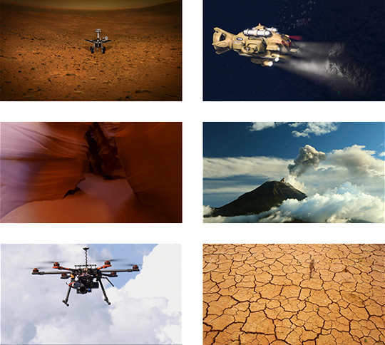

Das Video als Einführung verwenden
Wissenschaftler und Ingenieure haben schon immer entlegene Gebiete erkundet und neue Entdeckungen gemacht. Um das zu erreichen, haben sie Raumschiffe, Sonden, Satelliten und Roboter entwickelt. Diese sollen ihnen dabei helfen, diese neuen Orte zu erkunden und Daten zusammenzutragen.
In vielen Fällen waren sie erfolgreich, aber sie sind auch schon oft gescheitert. Dabei darf man nie vergessen, dass Fehlschläge immer eine Gelegenheit dafür sind, etwas Neues zu lernen. Hier sind einige Anregungen, die den Schülerinnen und Schülern dabei helfen sollen, wie Wissenschaftler zu denken:
-
Wissenschaftler senden Sonden zum Mars.
-
Wissenschaftler verwenden U-Boote unter Wasser.
-
Wissenschaftler fliegen Drohnen in Vulkane.
